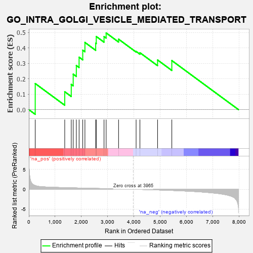
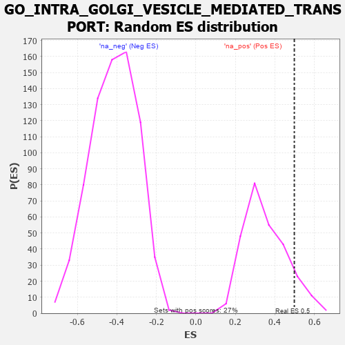

| | | Dataset | 7d |
| Phenotype | NoPhenotypeAvailable |
| Upregulated in class | na_pos |
| GeneSet | GO_INTRA_GOLGI_VESICLE_MEDIATED_TRANSPORT |
| Enrichment Score (ES) | 0.4981099 |
| Normalized Enrichment Score (NES) | 1.4206773 |
| Nominal p-value | 0.09293681 |
| FDR q-value | 0.32819322 |
| FWER p-Value | 1.0 |
Table: GSEA Results Summary

Fig 1: Enrichment plot: GO_INTRA_GOLGI_VESICLE_MEDIATED_TRANSPORT
Profile of the Running ES Score & Positions of GeneSet Members on the Rank Ordered List
| PROBE | GENE SYMBOL | GENE_TITLE | RANK IN GENE LIST | RANK METRIC SCORE | RUNNING ES | CORE ENRICHMENT | | 1 | NSF | | | 243 | 0.947 | 0.1694 | Yes |
| 2 | COG6 | | | 1365 | 0.416 | 0.1162 | Yes |
| 3 | COPZ1 | | | 1613 | 0.372 | 0.1637 | Yes |
| 4 | COPB2 | | | 1687 | 0.359 | 0.2303 | Yes |
| 5 | COPA | | | 1806 | 0.336 | 0.2864 | Yes |
| 6 | COG2 | | | 1911 | 0.319 | 0.3406 | Yes |
| 7 | GOSR2 | | | 2050 | 0.298 | 0.3862 | Yes |
| 8 | RAB6B | | | 2133 | 0.286 | 0.4363 | Yes |
| 9 | COPE | | | 2542 | 0.221 | 0.4316 | Yes |
| 10 | COG8 | | | 2564 | 0.218 | 0.4749 | Yes |
| 11 | COPG2 | | | 2859 | 0.173 | 0.4745 | Yes |
| 12 | GOSR1 | | | 2940 | 0.159 | 0.4981 | Yes |
| 13 | COG3 | | | 3412 | 0.088 | 0.4575 | No |
| 14 | COG1 | | | 4079 | -0.020 | 0.3780 | No |
| 15 | VTI1A | | | 4224 | -0.046 | 0.3696 | No |
| 16 | COG5 | | | 4895 | -0.176 | 0.3224 | No |
| 17 | CUX1 | | | 5437 | -0.304 | 0.3185 | No |
Table: GSEA details [plain text format]

Fig 2: GO_INTRA_GOLGI_VESICLE_MEDIATED_TRANSPORT: Random ES distribution
Gene set null distribution of ES for GO_INTRA_GOLGI_VESICLE_MEDIATED_TRANSPORT